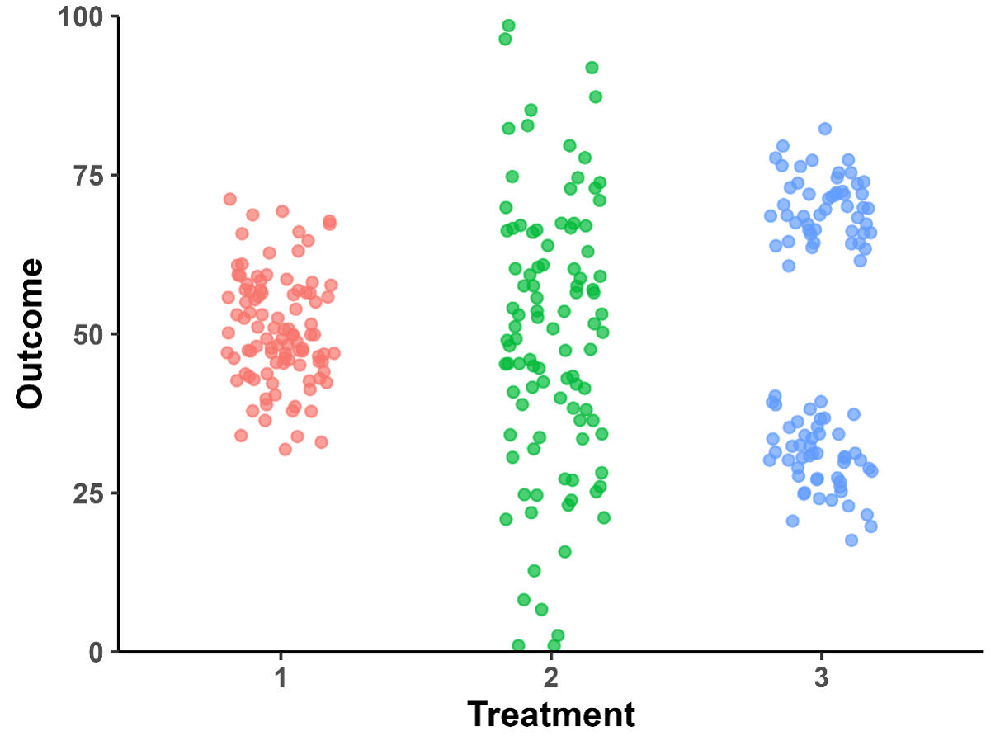
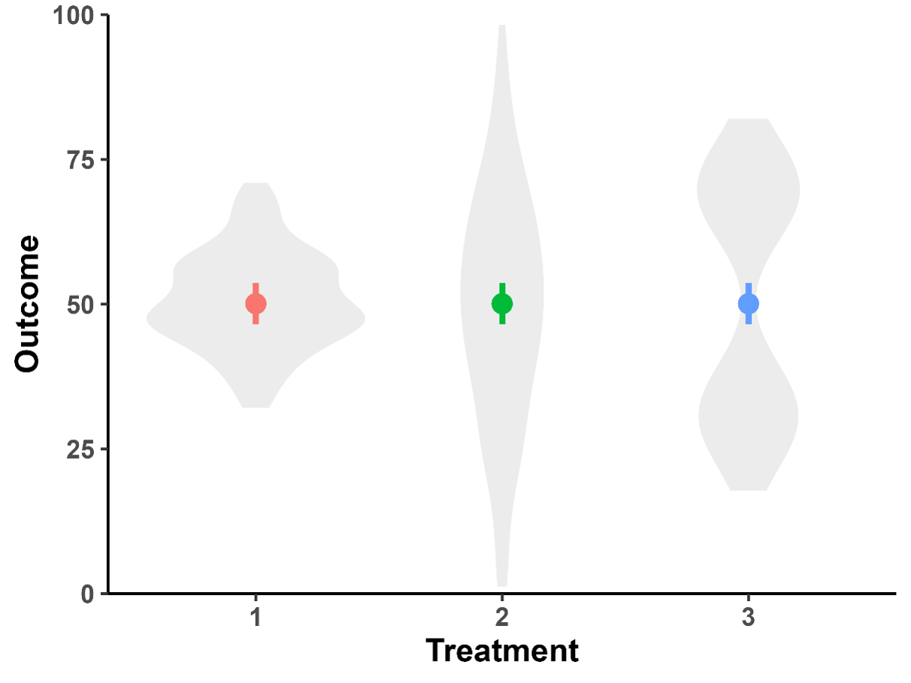

Scientific Writing#
In this section, we will discuss several general principles of writing scientific articles. We will focus on scientific reports as this is part of your assignment in the Expra, but many principles apply to other types of scientific writing as well (e.g., review papers, meta-analyses, commentaries, etc.).
Specifically, we will cover:
Contents: What information you should write about and where that information goes.
Language: How to express yourself in a scientific report.
Form: How to format your reports.
3.1 APA style: Standardized conventions for psychological articles.
3.2 Figures and Tables: Standardized guidelines for the creation of figures and tables.
3.3 References: How to cite other articles the easiest way.Use of AI tools: Rules for using AI tools such as ChatGPT, DeepL, etc.
1. Contents {#contents}#
This section is mostly based on an excellent paper by Mensh and Kording (2017) entitled Ten simple rules for structuring papers. It is strongly recommended that you read this paper and follow the rules when writing your reports. You will find a summary of the rules below:
Rule 1: Focus your paper on a central contribution
When you write your paper, you should try to focus it on one central contribution your project is making (this can be a theoretical insight, a new method, a criticism of previous research, etc.). Try to make your claim as simple as your data and experimental logic allow and clearly communicate it in the title of your paper so that it is immediately clear what your paper is showing.
A good example can be found in a paper by Aminoff and Durham (2023) entitled: Scene-selective brain regions respond to embedded objects of a scene. The central contribution is that scene-selective brain regions, which we usually assume to primarily respond to scene images, also respond to single objects. The novelty and relevance of this contribution are immediately apparent (the paper changes the way we think of these brain regions).
Compare this to a title that only focuses on what was done in the project: A comparison of neural responses of scene-selective brain regions to object and scene images. While this gives the readers a good idea of the method that was used in the project, it does not communicate the contribution as clearly (what did they find?) and will not spark the readers’ interest as much.
Checklist for good paper titles:
Should be short (10-15 words)
Avoid abbreviations/jargon
No question marks (provide answers, not questions!)
Tip
Formulate your title early on during (or even before) writing. This will serve as a reminder to yourself of the contribution you want to make and will guide you while writing.
Rule 2: Write for readers who don’t know your work
Your writing should be clear and easy to understand for a naïve reader (a psychologist who is not from the specific field your project is located in). This includes defining specific/technical terms, avoiding abbreviations and acronyms (unless common, such as RT or ms) and, maybe most importantly, making your readers care about your work (why is it important?).
Tip
A good way to test if your writing is easily accessible is to have a fellow student from another Expra group read your manuscript. They should have a good understanding of basic psychological principles but will probably not know much about your specific field. Their feedback can be valuable in determining what parts of your writing need more explanation, justification or context.
Rule 3: The context-content-conclusion scheme
Your reports should tell a good “story”. This does not mean that your writing should be lyric (see advice on language below), but your reports should start with a problem (the research question), then work on that problem and finally deliver a conclusion (a solution to that problem). This can be summarized in the context-content-conclusion scheme that can be found in the three major parts of each story: Beginning, Body and Ending. The Beginning sets up the context (problem) for the story, the Body provides the content of the story and in the Ending, the problem finds its conclusion.
If either part is missing, you will get different responses from your readers. If you tell someone your story and their response is “Why was I told that?”, it indicates that your story did not provide sufficient contextual information in the beginning. If they are sceptical and ask “Why should I believe that?”, it indicates that the content in the Body was not sufficient to convince them. If they simply ask “So what?”, they did not understand the conclusion provided in the Ending.
The context-content-conclusion scheme should be applied at different levels of your writing:
Paper level: Your paper as a whole should follow the context-content-conclusion scheme. Your introduction provides context, your methods & results the content, and your discussion the conclusion. Note that you can also think of this as your paper following a broad-narrow-broad structure (the “hour-glass structure”): The topics you will cover will first be very general at the beginning of your Introduction section, then become increasingly specific throughout your introduction and be most specific and relate to your project only in the Method and Results sections. In your Discussion section, you start specific again (“In this project…”) and then become broader (relation to similar studies and theories, to the field as a whole, applications in everyday life, etc.), ending with a final summarizing conclusion.
Paragraph level: When writing individual paragraphs, you should also try to apply the context-content-conclusion scheme to guide your readers. The first sentence of each paragraph defines the topic (context), the body provides (novel) content and the last sentence provides a conclusion (see example below).
Context:One possible explanation for the counterintuitive effect of X we observe is that […] Content: Salinger (1951) relates this to […] Similarly, Heller (1961) argues that effect X may be the consequence of […] In contrast, Vonnegut (1963) proposes an alternative view in which effect X is independent of […] Conclusion: In summary, all these accounts suggest that effect X may be reliable and not merely an artifact of our experimental design.
Rule 4: Have a clear, logical flow of arguments
Your writing should have both a clear structure (see rule 3 above and rules 6-9 below) and a logical flow of arguments. There are two simple ways to achieve this:
Avoid zig-zag: Each subject you cover should be covered only in one place and not, for example, in three different parts of your introduction. This also means that related arguments should not be interrupted by unrelated material (“zig-zag”). Instead, related sentences or paragraphs should be strung together so that the reader is naturally guided through your flow of arguments.
Use parallelism: Parallel messages should be communicated with parallel form (i.e., same syntax, same terms for same concepts). It is usually better to sound repetitive than to confuse people with different ways to refer to the same thing. This is especially important when using abbreviations (e.g., for conditions):
Bad: “CON stimuli led to slower responses whereas inconsistent stimuli had lower RTs.”
Good: “Participants responded faster to consistent compared to inconsistent stimuli.”
Rule 5: Tell a complete story in the abstract
The abstract is a short (usually 200-300 word) summary of your report. After the title (see rule 1), the abstract is the second thing your readers will read, and for many readers it will be the only part of a paper they will ever read! It is therefore extremely important that it is clear, concise and convincing. Ideally, it should tell the complete story of your project while at the same time sparking your readers’ interest and make them want to learn more.
The context-content-conclusion rule and hourglass structure also apply to the abstract:
Context:
Introduce the broader field (1-2 sentences)
Narrow down the context to the specific open question you want to answer (the “gap”; 1-2 sentences)
Justify why this question matters (relate back to broader context you started with; 1 sentence)
Content:
Summarize the method/experimental logic you used to answer your question (“Here we…”; 1-2 sentences)
Present the key results (2-3 sentences)
Conclusion:
Interpret the results and answer the question you posed in the beginning (1-2 sentences)
Show the consequences of your findings (with respect to theories, future studies, etc.; 1-2 sentences)
Rule 6: Introduction - Say why your paper matters
The purpose of the Introduction is to identify the gap in knowledge you seek to fill and highlight why it is important. It should cover the following aspects:
Introduce the general topic/field (short) – Why is it important?
Summarize current knowledge of the field (findings, theories, models) – What is your study based on?
Establish the gap in the current knowledge – What is still unclear?
Describe your project – What is the question/goal of your study?
Summarize your design, key results and conclusion – How is your project “filling the gap”?
In the Introduction, it is especially important to underline your arguments with relevant citations. When you make a claim (e.g., “Psychology students are very eager”), you must substantiate it with scientific articles supporting this claim. Claims that are not backed up by scientific evidence are merely opinions that may or may not be true and should be avoided. Additionally, you should ensure that you properly cite relevant work your project is building upon (e.g., related previous studies, a model or theory you are testing). But only cite articles that are directly related to your work! There is no need to impress people with the amount of literature you read, but it is important to show that you know the field and have understood the foundations of your project.
Tip
Remember to follow the hourglass principle in the introduction: From broad to narrow (or general to specific)!
Rule 7: Method - Provide enough detail for a replication
The Method section should contain all information that your readers need to judge whether your experiment is suited to answer your question and to repeat your experiment (remember the replication crisis?).
The Method section usually has its own subsections:
Participants: Who participated in your study (summary of demographic data such as mean age and SD, gender distribution, native language, population from which they were recruited, ethics, etc.)
Stimuli/Materials: Any materials you used while carrying out your study, for example stimuli that participants perceived, devices/software used to display stimuli and collect responses, questionnaires, databases, existing data, etc.
Procedure: What happened when (order of events), participants’ task(s) and instructions, trial structure
Design: Description of experimental factors/manipulations
Analysis: Description of specific analysis strategies (not needed for simple/common analyses)
Tip
Have a look at similar papers (e.g., your supervisor’s) and carefully read the method section. Things that need to be adressed: Assignment to experimental conditions (random?), between- or within-subjects design, counterbalancing of participants and/or stimuli, etc.
Rule 8: Results - Series of evidence supporting your claim
When writing your Results section, it is a good idea to structure it into subsections (either only mentally or by using subheadings): Which statistical analysis is testing what aspect of your question(s)? When you have a clear structure, introduce the question each paragraph answers: “We next tested whether…”, “After showing […], we next tested…”, “To ensure that there are no artifacts…”, etc.
If necessary, you can summarize your method/analysis strategy again as a reminder (e.g., if you are using an unusual design or category names/abbreviations). If possible, give an answer to each question at the end of the paragraph: “We thus conclude that there are no artifacts of…”, “…a significant difference between conditions, indicating that our manipulation achieved the desired effect.”
In general, it is important to summarize both descriptive and test results, and relate them to your hypotheses: “In line with the context hypothesis, we found…” or “…were faster which supports the notion of…”.
Rule 9: Discussion - Was the gap filled?
In your discussion section, you summarize your findings, critically relate them back to your hypotheses and the previous research, models or theories they are based on, outline possible limitations and avenues for future research and give your readers a final take-home message:
Start by repeating the main question of your work, how your project tried to answer it (1-2 sentences on your method), the key findings and whether they support your hypotheses
Highlight the main contributions of your work to the gap: Relate your findings to previous findings, theories, models, etc.
Discuss potential differences between your findings and others as well as unexpected results and provide reasons for these differences (you can speculate here)
Discuss limitations of your work (but do not make it look worse than it is!), remaining open questions and implications for future studies
Show how your work advances the field or how it can be applied elsewhere (e.g., technology, societal impact)
Draw a final summarizing conclusion (take-home message)
Follow the hourglass structure (specific to general) in the discussion
Tip
The Discussion section is often critical for the final grade of your report. While much of the rest of your report is more or less determined by the project you are working on, the discussion is your chance to show how much you thought about the project, how well you understood its theoretical foundation and how well you are able to look at it from different angles.
Rule 10: Test your paper on naïve readers
A great way to test whether you followed the nine rules above is by having someone else (e.g., a fellow student from another Expra group) read your report and see what they think of it. Below you find typical reactions of your readers and how you can find out what you should work on to avoid these reactions:
Rule |
Sign of violation |
|---|---|
1. Focus on a central contribution |
Readers cannot give a 1-sentence summary |
2. Write for naïve readers |
Readers do not “get” the paper |
3. Use context-content-conclusion scheme |
Readers ask why something matters |
4. Have a clear, logical flow of arguments |
Readers stumble on small section of text |
5. Tell a complete story in the abstract |
Readers cannot give an “elevator pitch” of your work after reading the abstract |
6. Introduction: Say why your paper matters |
Readers show little interest in the paper |
7. Method: Provide enough detail for a replication |
Readers can’t recreate your experiment |
8. Results: Series of evidence supporting your claim |
Readers do not agree with your conclusion |
9. Discussion: Was the gap filled? |
Readers are left with unanswered criticisms and/or questions on their mind |
2. Language {#language}#
Scientific writing has the goal to convey information as precisely and clearly as possible in as much detail as necessary using as few words as possible. It should be objective and formal, but it should not be unnecessarily complicated or intellectual. Here are a few things to keep in mind:
No colloquial language (e.g., colloquial expressions, abbreviations):
Bad: We don’t think there is much of an effect, the test scores were pretty much the same.
Good: We conclude that object size does not affect categorization speed as response times were not significantly correlated with object size.Write from your perspective (“We” or “I”) and use active voice if possible:
Bad: Stimuli were manipulated to contain only low-level information.
Good: We manipulated stimuli to contain only low-level information.Use verb tense consistently:
Simple past for what you or others did: We conducted an ANOVA… Kim (2015) showed…
Simple present for conclusions and generalizations: We conclude that font size affects reading speed.
Use clear, precise and objective language:
Bad: Response times were roughly equal.
Good: Response times did not differ significantly, t(48) = 1.04, p = .304.Explicitly name variables you are assessing or comparing:
Bad: We found no effect of working memory load.
Good: We found no effect of working memory load on response times.Bad: Response times were shorter in the low-load condition.
Good: Response times were shorter in the low-load compared to the high-load condition.Use consistent terminology for conditions, abbreviations, etc. in the text, table and figures!
Use simple language – no need to sound smart!
Bad: Participants experiencing chronic somnolence due to inadequate nocturnal rest demonstrated significantly diminished vigilance.
Good: Participants who were sleep-deprived showed lower attention test scores.Avoid overly long sentences – try to break them up into shorter sentences:
Bad: Although the experiment demonstrated that participants who engaged in mindfulness meditation reported lower stress levels and higher attention scores, it is not clear whether these effects would persist over a longer period or in a larger and more diverse population.
Good: Participants who engaged in mindfulness meditation reported lower stress levels and higher attention scores. However, it is not clear whether these effects would persist over a longer period. Additionally, the effects require replication in a larger and more diverse population.
Guide your readers through your text
While writing, consider not only the message you want to convey, but also the information your readers need to understand it (see rule 2 above). There should be a clear roter Faden in your work, and arguments should build on each other. Certain key words make it easier to follow your train of thought:
Here we… to identify your question, method, etc. and distinguish it from previous work
We found… to identify your results
We conclude/Our results indicate… to identify your conclusions and interpretations of the data
We suggest/assume… to identify suggestions (for theories, models or future work) or speculation
Connect thoughts with words like however, similarly, surprisingly, in contrast, etc.
3. Form {#form}#
There are a number of formal rules that aim to standardize scientific writing and make it easy for readers to read scientific texts and find relevant information. The most important set of rules can be found in the Publication Manual of the American Psychological Association (more commonly referred to as “APA style”). A short overview can be found here.
In your reports, you must always follow APA style. We will summarize the most important rules below. In case something is not covered here or you are not sure how to proceed, please refer to the 7th edition of the APA manual (can be found in the library).
3.1 APA style {#apa-style}#
Purpose of APA style
The purpose of APA style is to provide standardized writing conventions for the structure of empirical reports, for referencing other published works and for the creation of figures and tables. It is supposed to create a form that makes information easily accessible by providing mandatory rules for the writing of psychological articles.
APA: Structure of your manuscript
Title page (incl. title, author name(s), contact information, keywords)
Abstract
Introduction
Method
Participants
Materials
Procedure
Design
Analysis
Results
Discussion
References
Appendix
Note that some subheadings may not be necessary in your project (e.g., the Analysis subsection).
Important
For your final reports: You must include a signed declaration of originality (Eigenständigkeitserklärung) at the end of your report!
APA: Layout
For your reports: Times New Roman, size 12, double-spaced, left-aligned (no hyphens/manual breaks in words at end of line)
Indent first line of each paragraph (except for the abstract) using the TAB key on your keyboard
Differentiate levels of heading (note that font size is the same as the text!):
The introduction has no heading; instead repeat the paper title as the heading
Page header: Contains page number and running head (short title)
Title page: In addition to APA style, provide your email and student ID number
Tip
Have a look at the APA student sample paper and Word template
APA: Reporting test results
Use italics for letters used as statistical symbols: t test, p value, R², etc.
But not for Greek letters: α, β, Χ², etc.
Report exact p values (e.g., p = .019) unless p < .001.
Omit the leading zero for values that cannot exceed 1 (e.g., proportions, correlations, p values: r = .54, not r = 0.54).
Use a reasonable number of decimals for the metric you are reporting: 147 ms, mean rating 6.51, p = .041
For test results, include the test statistic, degrees of freedom, value, p value and effect size:
t test: t(52) = 4.8, p < .001
ANOVA: F(2,34) = 2.51, p = .003, η² = .04
Correlation: r(357) = .42, p < .001
Regression coefficient: β = -.34, t(225) = 6.53, p < .001
Narrative form: “A one-way ANOVA showed that noise had a significant effect on test scores, F(3,27) = 5.94, p = .007, η² = .17. Participants in the low-noise condition yielded higher scores (M = 23.6, SD = 3.1) compared to the medium noise…”
Tip
More info on Numbers and Statistics.
3.2 Figures and tables {#figures-and-tables}#
Figures (and tables) are among the most important parts of your paper! Many readers will read your title, maybe the abstract and then look at your figures before reading the main text. You should therefore invest time into making visually appealing, clear and informative figures.
Method section: You can use figures to show…
(example) stimuli
the design of your study
an example trial sequence
the apparatus used in your study
Results section:
Use figures to visually showcase the key findings of your paper
Use tables for large amounts of data that would be too chaotic in a figure or when the exact values matter
Report values in the text if it’s just a few numbers (e.g., two t test results do not require a table)
Do not report the same data multiple times (i.e., in the text, a figure and/or a table)
APA style also has guidelines for the creation of figures and tables (see below). Keep in mind that figures and tables should (ideally) be self-explanatory, therefore it is important to choose a meaningful title and explain data, abbreviations, colours, etc. in the caption.
APA: Figure guidelines
See also
APA figure guidelines and sample figures
APA: Table guidelines
See also
APA table guidelines and sample tables
Use a plot type appropriate for your data
Here is a little exercise. Look at the plot above and guess what the respective distributions of the data going into each of the three bars look like. If you want, you can copy the plot and draw some data points on it to indicate the distribution.
Click here to see the actual distributions of the data

As you can hopefully see, bar plots are not the best way to visualize data. Especially the distribution of the data is hard to guess from just a mean and an error bar. An alternative to bar and box plots can be violin plots that intuitively show the distribution of the data (where there are more or less data points):
Click here to see violin plots of the same data

To create a violin plot in R, you can use the geom_violin() function within the ggplot framework:
ggplot(…) +
geom_violin()
You can then play with visual appearance, layer points on top of the violins, etc.:
ggplot(…) +
geom_violin(colour = "white", fill = "grey", alpha = 0.3) +
geom_point(…)
Click here to see violin plots with data points layered on top of the violins
A personal recommendation
Invest time into making visually appealing, easy-to-understand and clear result plots!
Use ggplot2 (part of the tidyverse package) for plot creation in R
Choose a plot type appropriate for your data (e.g., violin plots)
Use colours that are easy to distinguish (consider colour vision deficiency)
Make sure that you label your data clearly (axes, legends, lines, etc.)
Export your figures with a high resolution (at least 300 dpi) or as a vector graphic
ggplot(df, aes(x,y)) +
geom_violin(colour = "white", fill = "grey", alpha = 0.3) +
labs(x = "Treatment", y = "Outcome") +
theme_classic() +
theme(legend.position = 'none')
# Set the size of your plot to the width and height you want it to be in your report (a width of 16 cm is good for standard A4 pages)
ggsave(file = “violin_plot_file_name.png",
width = 16, height = 9, units = "cm",
dpi = 300, bg = "white")
3.3 References {#references}#
APA has strict guidelines for referencing work by others. It is important that you clearly distinguish between your own thoughts and ideas taken from other sources and explicitly name and credit these sources. A failure to properly cite other work is considered plagiarism!
Caution
Plagiarism in Prüfungsleistungen will make you fail the exam, and in the worst case lead to your exclusion from the university!
When to provide a citation
You must provide a citation for (1) information taken from other sources (e.g., research findings, statistics, facts, ideas, opinions, interpretations), even if you put the information in your own words, and (2) tools and materials you used (e.g., computer software, stimulus sets, graphics, analysis tools, R packages, etc.).
You do not need to provide a citation for information considered common knowledge (e.g., “We conducted an ANOVA” does not require a citation because ANOVAs are considered a standard procedure in psychology).
Note that in 99 % of cases, citing means paraphrasing, not verbatim quoting! Use verbatim quotes only if strictly necessary:
Horz and Rohrmann (2020) suggested that psychology is fun.
Previous research shows that students enjoy statistics (Schultze & Schnatz, 2019).
In 2021, Fiebach’s seminal study on computer games showed that…
The authors concluded that the “Expra is the most underrated seminar in the psychology bachelor” (Wiesmann, 2025, p. 47).
Do yourself a favour: Use a reference management software!
1. Install software of your choice (we recommend Zotero)

You can just drag-and-drop PDFs into your collection. Zotero will automatically search for article information, but it is your job to make sure that all information (author names; year of publication; journal name, volume and issue; page numbers; DOI) is complete and correct!
2. Install plugin for your text editor

3. Tell Zotero to stick to APA style (7th ed.)
This dialogue can be found under “Document preferences” and will automatically open when you insert your first citation.
4. Use Zotero to add in-text citations
Click the position in the text where you want to add a citation, then click “Add/Edit Citation”. You can search among publication titles, author names, journal names, etc. If necessary, you can choose several sources you want to cite, arrange them using drag and drop, and even add prefixes and suffixes such as “(see for example Rohrmann, 2012)” by clicking on the respective reference.
5. When you’re done, add the correctly formatted reference list at the end of your manuscript by clicking “Add/Edit Bibliography”
Tip
Using Zotero consequently while writing will save you a lot of time and stress in the long run. Zotero will automatically remove entries from your reference list when you delete the (last) sentence in which you cited an article, for example. This way you can just write and cite things in your text, and before submitting you simply add your bibliography without worrying whether you forgot to include or remove a reference manually.
See also
Go to the chapter Literature Search and Reference Management to learn how to use Zotero for literature management.
4. Use of AI tools {#use-of-ai-tools}#
You are allowed to use AI tools to…
Rephrase and review text (e.g., DeepL Write, Grammarly)
Translate text (e.g., DeepL Translate)
Search for literature and summarize articles (e.g., Elicit)
Brainstorm (e.g., ChatGPT)
Write code (e.g., GitHub Copilot)
…but note these rules:
Your own contribution must be dominant in the reports: Having AI write entire reports or parts is not acceptable!
You are responsible for your reports – double check any output generated by AI!
You cannot use AI tools as a source for a claim (e.g., “According to ChatGPT (2024)…”)
Provide a list of AI tools you used at end of your report and include disclaimer on AI use in your Eigenständigkeitserklärung (see General Information About EXPRA)
Summary#
Follow and test the 10 rules for structuring papers (Mensh & Kording, 2017)
Use easy, clear and concise language
Follow APA style (layout, paper structure, etc.)
Create visually appealing, easy to read and informative figures and graphs
Use a reference management software to identify all sources you used
References#
Aminoff, E. M., & Durham, T. (2023). Scene-selective brain regions respond to embedded objects of a scene. Cerebral Cortex, 33(9), 5066-5074. https://doi.org/10.1093/cercor/bhac399
Mensh, B., & Kording, K. (2017). Ten simple rules for structuring papers. PLOS Computational Biology, 13(9), e1005619. https://doi.org/10.1371/journal.pcbi.1005619
Acknowledgments
This section was contributed by Sandro Wiesmann.